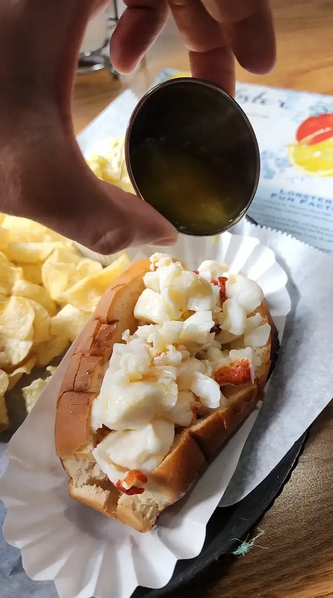
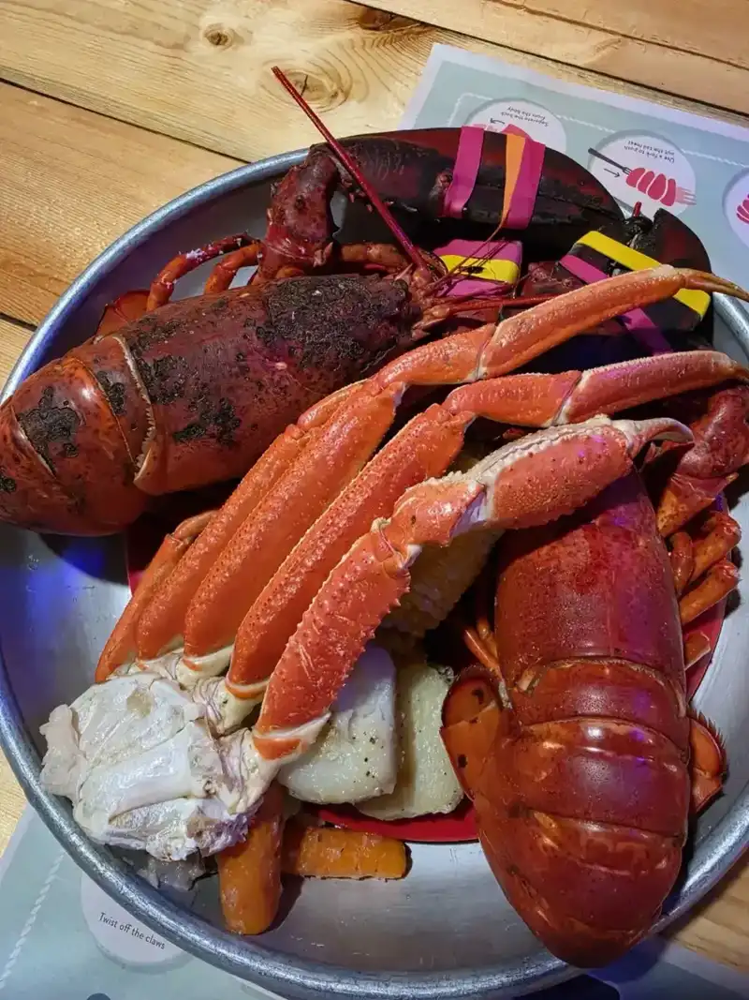
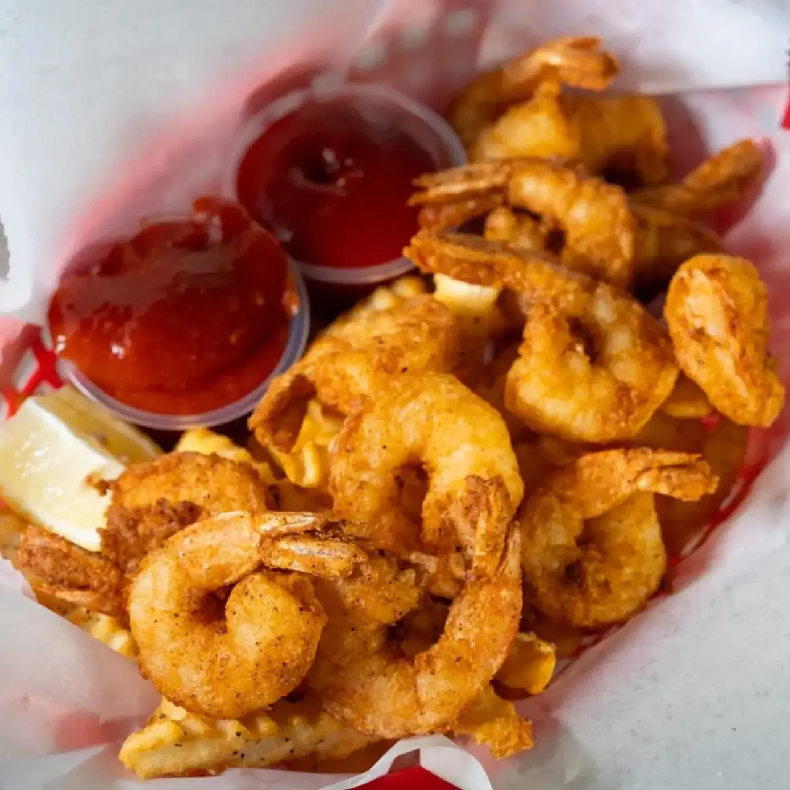

Lobster rolls and dinners
A lobster roll with lots of claw meat, a UConn Roll smothered in butter, and twin lobsters with corn and potatoes.

Lobster Haven · Gibsonton
Lobster Haven serves Gibsonton from Tampa.
Coming from Gibsonton? Lobster Haven is on W Hillsborough Ave in Tampa. Lobster rolls, steamed seafood baskets and chowder, plus party booking and catering.
What to order
What keeps going out of the kitchen.

A lobster roll with lots of claw meat, a UConn Roll smothered in butter, and twin lobsters with corn and potatoes.

A steamed basket of crab, shrimp, mussels and the fixings. Steamed clams come with broth as well as butter.

Golden fried shrimp with cocktail sauce, and a grouper sandwich.
4.3 ★ · 1031 Google reviews
Love this place. Great lobster role with lots of claw meat. I've had their steamed basket of crab, shrimp, mussels and the rest of the fixings and it is scrumptious. I do however add steamed clams because they are the only place I've found that knows clams should be served with broth as well as butter.
We've been going to Lobster Haven for many years and we've enjoyed each visit. We've tried most of their menu items but, my favorite meal is their UConn Roll smothered in butter with chips on the side, absolutely delicious! On our most recent visit we each had the Twin Lobsters with corn and potatoes and as always the lobster was fantastic!
We stumbled upon this lobster restaurant while searching for a lobster place in the area. It was our first time trying a freshly cooked lobster that we could open ourselves. We were pleasantly surprised by the great price we paid for the lobsters. Their clam chowder was also good. And the service was great! 👍
Took my dad for a lobster dinner and he loved it! The rest of our food was also delicious. The service was super friendly and accommodating and the restaurant had a great casual vibe.
Call ahead, order online for pickup, or just come in.